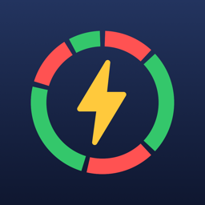

Графік відключень світла для Дніпра і області у віджеті на головному екрані та екрані блокування.
Чому немає смуги графіка? Коли оператор оголошує екстрені відключення, графіки не діють — віджет показує «Екстрені відключення».
Графік не збігається з фактичним? Дані беруться з публічного сервісу YASNO; оператор може змінювати графік протягом дня. Віджет оновлюється приблизно кожні 30 хвилин, у застосунку — потягніть список униз.
Питання та пропозиції: akrupa1512@gmail.com
Неофіційний застосунок, не повʼязаний з YASNO чи ДТЕК.